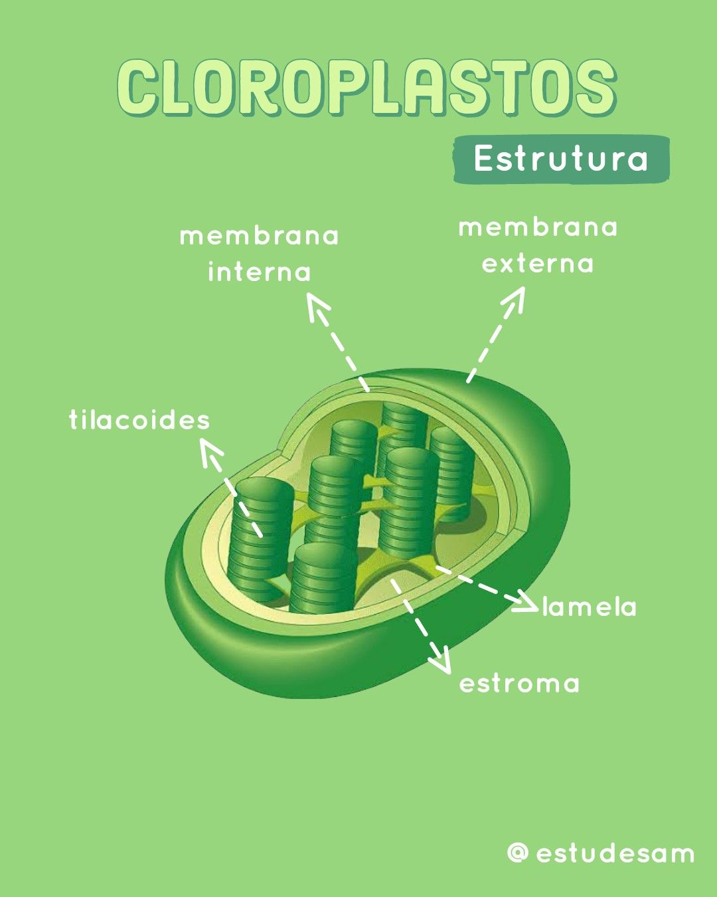

O que são Cloroplastos?
Os cloroplastos são organelas responsáveis pela fotossíntese. Contêm clorofila, que captura a luz solar e a transforma em energia química, essencial para o crescimento da planta.
Estrutura dos Cloroplastos
Os cloroplastos possuem uma estrutura complexa composta por:
- Membrana Externa: Uma camada dupla de lipídios que envolve o cloroplasto e controla a entrada e saída de substâncias.
- Membrana Interna: Forma a estroma e os tilacoides. A membrana interna contém os pigmentos fotossintéticos e é onde ocorre a maior parte da fotossíntese.
- Estroma: Fluído viscoso dentro do cloroplasto onde ocorrem reações da fase clara da fotossíntese e onde estão localizados os grânulos de amido e DNA do cloroplasto.
- Tilacoides: Estruturas membranosas empilhadas em grânulos chamados de grana. Os tilacoides contêm clorofila e outros pigmentos fotossintéticos que capturam a luz solar.
Função dos Cloroplastos
A principal função dos cloroplastos é realizar a fotossíntese. Este processo é dividido em duas fases principais:
- Fase Clara: Ocorre nos tilacoides e envolve a captura da luz solar, que é convertida em energia química na forma de ATP e NADPH.
- Fase Escura (Ciclo de Calvin): Ocorre no estroma, onde o ATP e NADPH produzidos na fase clara são usados para converter dióxido de carbono em glicose.
Além da fotossíntese, os cloroplastos também são responsáveis pela síntese de certos aminoácidos, lipídios e pigmentos importantes, como os carotenoides, que têm funções antioxidantes.
Importância dos Cloroplastos
Os cloroplastos são essenciais para a vida na Terra, pois são a principal fonte de energia para os organismos fotossintéticos e, consequentemente, para a maioria dos ecossistemas. A fotossíntese realizada pelos cloroplastos não só fornece alimentos para plantas, mas também libera oxigênio na atmosfera, vital para a respiração dos seres vivos.
Além disso, a capacidade dos cloroplastos de converter energia solar em energia química sustenta a cadeia alimentar global e afeta diretamente a produção de biomassa e a saúde das plantas cultivadas para consumo humano.
Comparação com Organela Similar
Os cloroplastos compartilham algumas semelhanças com as mitocôndrias, presentes em células animais e vegetais. Ambas as organelas possuem duas membranas e contêm seu próprio DNA. No entanto, enquanto as mitocôndrias são responsáveis pela respiração celular e produção de ATP, os cloroplastos são especializados na fotossíntese e na produção de glicose.
Essas semelhanças refletem a teoria endossimbiótica, que sugere que tanto cloroplastos quanto mitocôndrias se originaram de organismos procariontes que foram incorporados pelas células e evoluíram para desempenhar papéis específicos dentro das células eucarióticas.